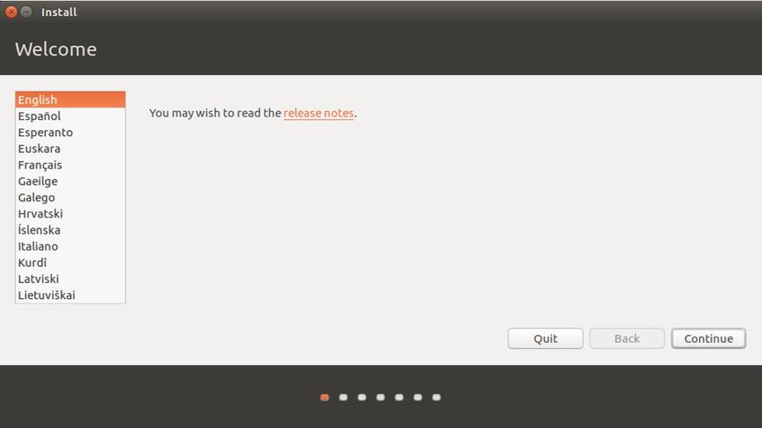

UEFI 啟動 Ubuntu16.04 + Win10 雙系統
2018-02-25
為了更深一步的學習Linux，決定在個人的筆電中安裝雙系統。在爬了多個雙系統安裝教學文章，以及多次的安裝嘗試及失敗後，決定如果成功後要把詳細的流程寫成教學文章，避免以後再走冤枉路。在爬文的過程中發現了，以前的電腦都是 Legacy 啟動，而目前的筆記型電腦則都是 UEFI 啟動，所以有些比較舊的雙系統教學文某步驟些已經不適用於當前的電腦。
環境說明
Laptop 型號： Acer Aspire E14
SSD： Win10家庭版
HDD-450GB： Ubuntu 16.04.3
製作 iso 開機 USB
為了要安裝 Ubuntu 必須先製作開機 USB ，這部分由於網路上已經有許多教學文章，這邊就不在多加贅述。
硬碟分區(在 windows 下)
因為在 Linux 中並沒有 C 槽和 D 槽的概念，在安裝 Ubuntu 前，我們必須先在 Windows 下將硬碟分割出一塊未配置的空間，切記不要格式化該空間。
- 按下「Windows 標誌鍵 + x」後，選擇磁碟管理。
- 選取欲切割的硬碟，按右鍵選取壓縮磁區，這邊我個人配置了 450G，如下圖1所示。

關閉 Windows 預設的快速啟動
在 Windows 8 後，開始支援電源鈕的快速啟動，為了避免該功能影響到我們安裝/啟用 Ubuntu ，必須將該功能關閉。
- 按下「Windows 標誌鍵 + x」後，選擇電源選項，接著點選其他電源設定，如圖2。
- 將「開啟快速啟動」選項取消，儲存變更，如圖3。
進入 BIOS 設定
重新開機，根據不一樣廠牌的電腦，在開機畫面有不同的快捷鍵進入 BIOS(由於我的電腦是 Acer 快捷鍵為 F2)，因為是第一次進入 BIOS ，系統會要求你先設定 Spuervisor password ，緊接著針對 USB 安裝 Ubuntu 進行設定。
- 設定 Spuervisor password ，如圖4所示。
- 把 F12 Boot Menu 設為 Enabled ，如圖5所示。
- 關閉 Secure Boot，儲存設定，並重新開機，如圖6所示。
- 開機過程按下 F12，選擇以 USB 開機，如圖7所示。
安裝 Ubuntu
安裝的步驟依序如下方圖所示，這邊針對Ubuntu的安裝類型，以及空間配置加以說明。首先在選擇安裝類型時，請選擇「其他類型(Something else)」方便創建自己的分區。緊接著分區設定為整個安裝過程中最關鍵的步驟，底下對不同的分區加以說明。
- swap area： 虛擬記憶體的空間，選擇主分區(Primary)和空間起始位置(Beginning of this space)。根據其他教學文的建議，這邊分配的大小最好為實體記憶體大小的2倍，像在這個範例中，我就配置了16G給swap，因為我有8G的記憶體。
- efi系統分區： 因為要使用UEFI來啟動Ubuntu，所以必須建立efi系統分區來取代傳統的/boot掛載，請選擇邏輯分區(Logical)和空間起始位置(Beginning of this space)，配置的大小不要低於 256MB ，這邊個人的配置 512MB 提供大家參考。
- / 根目錄： 掛載根目錄，類型為 EXT4 日誌文件系統(EXT4 journaling file system)，選擇邏輯分區(Logical)和空間起始位置(Beginning of this space)，這邊的空間配置最好不要低於 8G ，這邊個人的配置 16G 提供大家參考。
- /usr： 類型 EXT4 日誌文件系統(EXT4 journaling file system)，選擇邏輯分區(Logical)和空間起始位置(Beginning of this space)，這個目錄為軟體的安裝位置，這邊個人的配置 64G 提供大家參考。
- /home： 類型 EXT4 日誌文件系統(EXT4 journaling file system)，選擇邏輯分區(Logical)和空間起始位置(Beginning of this space)，這個目錄基本上就用來放置你個人文件和檔案的地方，所以配置給該目錄的空間應該盡可能大一點。
在分區設定為之後，切記將引導開機的設備改成 efi 系統分區，因為預設是錯誤的。(以我的這個範例來說，sda5 就是引導開機的設備。)完成 Ubuntu 的安裝之後，記得重新啟動，並卸除 USB。

新增Ubuntu efi檔案
- 進入 BIOS ，在 Security 項目中選擇「Select an UEFI file as trusted for executing」。
- 選擇 HDD0 >> EFI >> ubuntu，新增所有 .efi 檔案。例如:grubx64.efi 命名為 ubuntugrubx64efi。在本範例中有兩個檔案需要被新增，分別為 grubx64.efi、fwupx64.efi。
重新開啟 Secure Boot
刪除 supervisor password
從 Boot Manager ，選擇開機項目
- 按 F12 ，進入 Boot Manager ，如圖32所示。
- 選擇 ubuntugrubx64efi ，開啟 ubuntu ，如圖32所示。
- 選擇 *ubuntu 進行作業系統的啟動，最後便可以到登入畫面，如圖33、34所示。
Reference
[1] http://p-s.co.nz/wordpress/dual-boot-ubuntu-16-04-on-win-10-acer-aspire-e15/
[2] https://kknews.cc/zh-tw/digital/oy4xnmm.html
[3] http://www.cnblogs.com/willnote/p/6725594.html
[4] http://blog.csdn.net/ysy950803/article/details/52643737
[5] http://blog.csdn.net/fangjin_kl/article/details/78676948